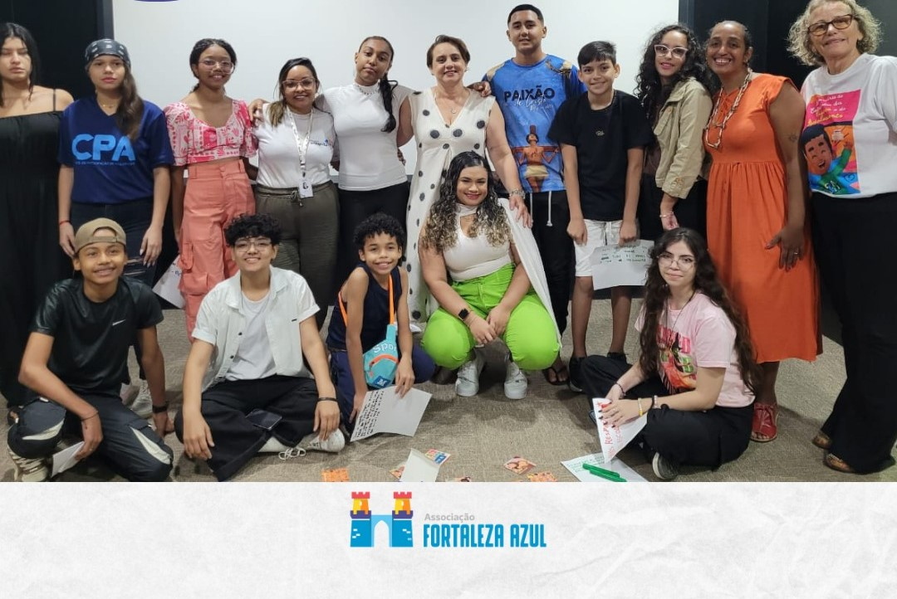

Um pouco sobre a associação
Somos uma instituição sem fins lucrativos em Fortaleza que presta assistência social, apoio e terapia a crianças com autismo e seus familiares. Ela oferece serviços como fonoaudiologia e psicomotricidade para suprir a demanda onde o SUS não consegue atender e também trabalha na defesa dos direitos das pessoas autistas.
A FAZ oferece serviços essenciais como fonoaudiologia e psicomotricidade, buscando suprir a demanda e garantir a inclusão e o desenvolvimento pleno de autistas e o acolhimento de suas famílias.
A FAZ é regida por seu estatuto e busca a transparência total em suas ações e finanças. Atualmente, a instituição conta com centenas de famílias associadas.
Conheça nossa história e objetivosNosso Público-Alvo e a Importância das Parcerias Estratégicas
O foco principal da Associação Fortaleza Azul (FAZ) são as pessoas com Transtorno do Espectro Autista (TEA) e, de forma inseparável, suas famílias. Nossa atuação começa no acolhimento e suporte direto a este núcleo familiar, oferecendo um ambiente onde possam encontrar informação, compartilhar experiências e acessar serviços essenciais.
Entendemos que a jornada do autismo exige uma rede de apoio robusta. Por isso, a FAZ estende seus esforços a um público mais amplo, dirigindo-se a profissionais da área de saúde, educação e assistência social. Buscamos ativamente parcerias com professores, estudantes e outras organizações.
O objetivo dessas alianças é duplo: garantir que as pessoas autistas, incluindo as famílias de baixa renda e aquelas com necessidades especiais em geral, tenham acesso a terapias e direitos, e fortalecer a conscientização na sociedade civil. Trabalhamos para que a inclusão seja uma realidade em escolas, ambientes de trabalho e espaços públicos, construindo uma verdadeira "fortaleza" de apoio e defesa dos direitos em Fortaleza e no Ceará.
Voluntariado
Doe seu tempo e suas habilidades! A FAZ busca constantemente **profissionais voluntários** para atuar nas terapias e no suporte às famílias.
Profissionais Requeridos:
- Psicopedagogos
- Psicólogos
- Fonoaudiólogos
- Terapeutas Ocupacionais
- Musicoterapeutas
Se você tem disponibilidade, criatividade e empatia, fale conosco e junte-se à nossa rede de apoio.
como podemos ajudar você?
A FAZ trabalha em diversas frentes para garantir a qualidade de vida e os direitos das pessoas autistas. Aqui estão alguns dos nossos benefícios e serviços:
- fonoaudiologia
- programas de terapia
- psicomotricidade
- defesa dos direitos das pessoas autistas
- e muito mais
sinais do autismo
Alguns dos sinais abaixo podem ser percebidos antes dos 3 anos. A família deve estar atenta e procurar um especialista para avaliação.
- Emite poucos sons;
- Não responde quando chamado;
- Não interage com outras crianças;
- Apresenta movimentos repetitivos;
- Não parece gostar de carinho;
- É extremamente quieto ou extremamente agitado;
- Não mantem contato visual efetivo;
- Não brinca de faz de conta.
Doação de Itens e Bazar FAZ BEM
Realizamos periodicamente o Bazar FAZ BEM para arrecadar fundos e manter os atendimentos. Você pode ajudar doando itens em bom estado:
- Roupas de adultos e infantil
- Calçados, bolsas e acessórios
- Brinquedos, eletrodomésticos e utensílios domésticos
- Carrinho de bebê e outros materiais
Para agendar a coleta ou entrega da sua doação, entre em contato com a nossa equipe.